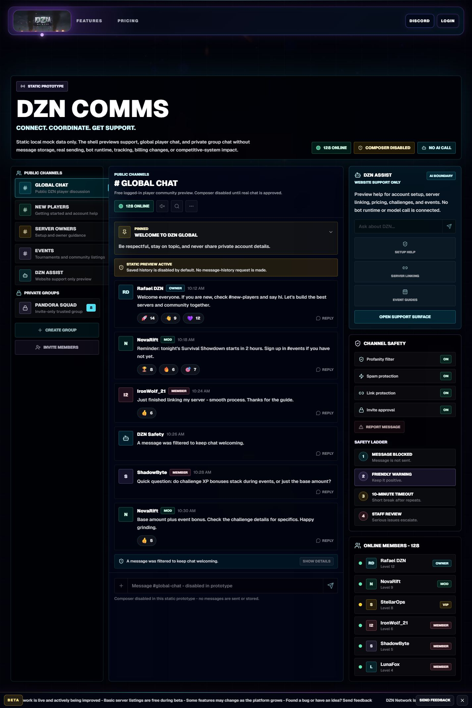
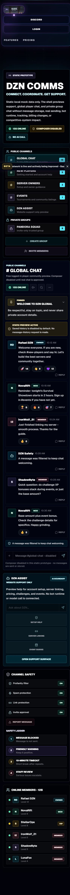
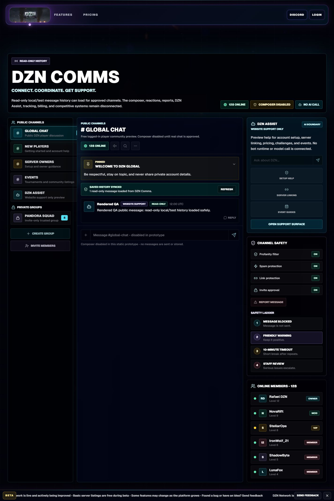
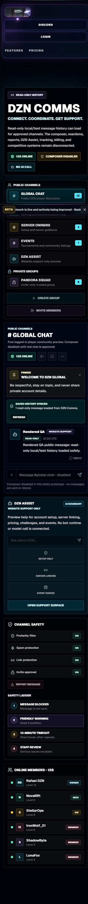
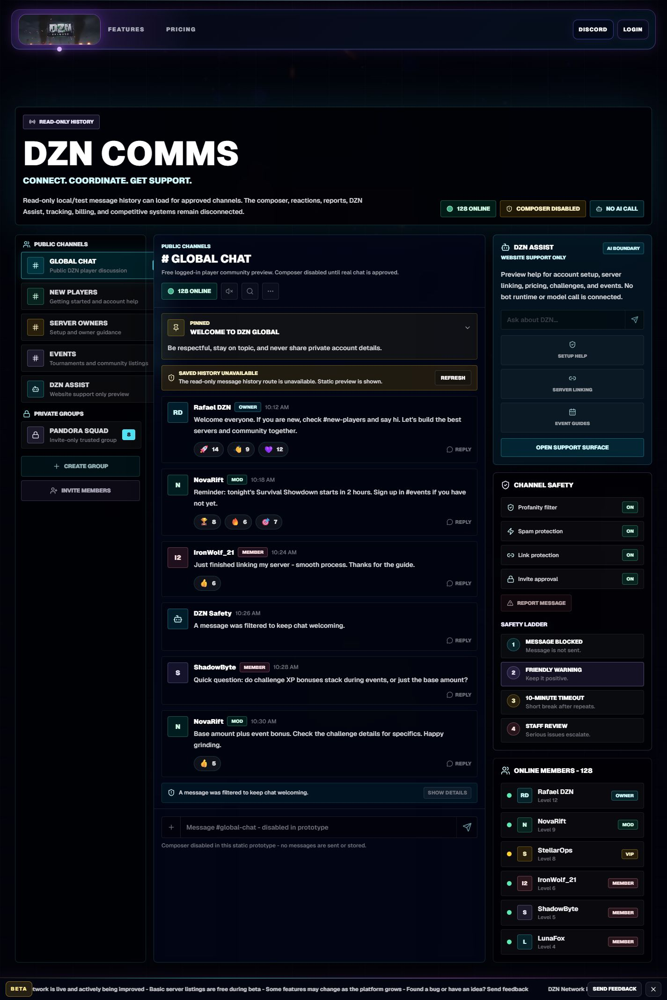
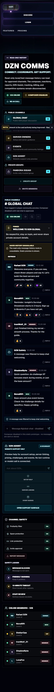
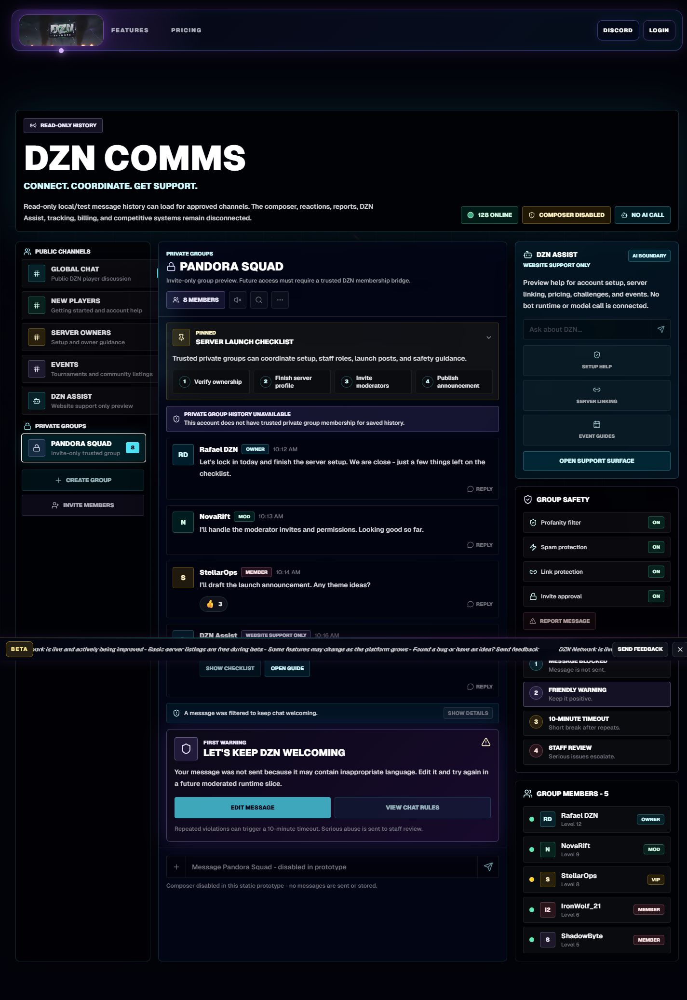
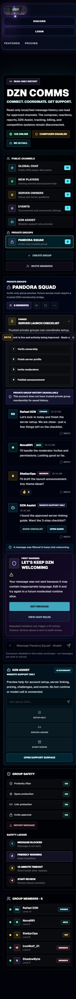

Static Fallback
The default client flag is disabled, no message-history request is made, and the static Global Chat prototype remains visible.


This package captures the guarded /community message-history UI with the flag off and on. The enabled states use actual local Cloudflare Pages function responses and temporary local D1 state only.
The default client flag is disabled, no message-history request is made, and the static Global Chat prototype remains visible.


The local Pages route returns one seeded public-safe Global Chat message. The page renders it as read-only history and keeps sending disabled.


The local Pages route returns an unavailable response when the message store is not usable. The page keeps the static Global Chat fallback.


The local Pages route denies Pandora Squad history without a trusted private membership row. The page shows the safe private fallback and does not render the seeded private body.


No sending, reaction runtime, reports, moderation mutations, DZN Assist runtime, WebSockets, Durable Objects, tracking calls, Store/payment changes, live checkout, production writes, retained exports, deployment, or issue #49 change is included in this QA package.